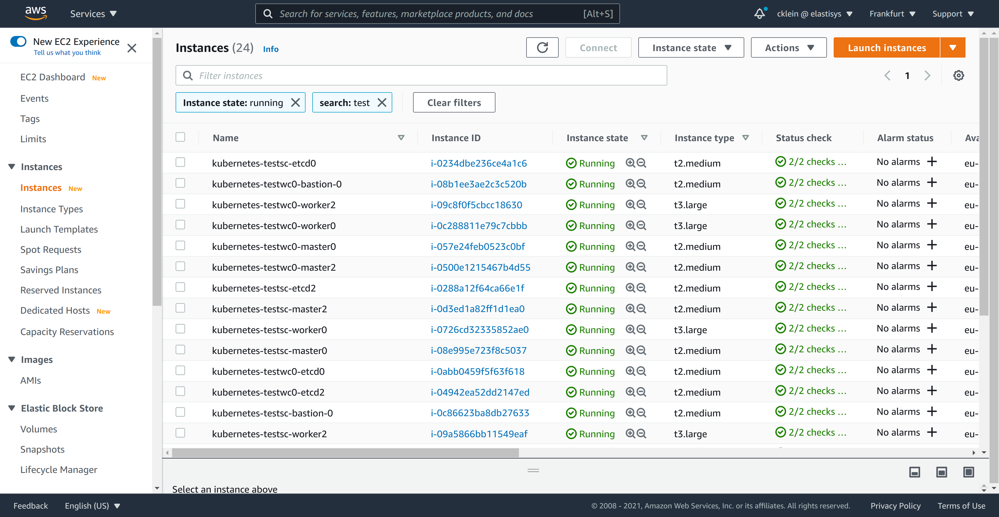

This page is out of date
We are currently working on internal documentation to streamline Compliant Kubernetes onboarding for selected cloud providers. Until those documents are ready, and until we have capacity to make parts of that documentation public, this page is out-of-date.
Nevertheless, parts of it are useful. Use at your own risk and don't expect things to work smoothly.
Compliant Kubernetes Deployment on AWS¶
This document describes how to set up Compliant Kubernetes on AWS. The setup has two major parts:
- Deploying at least two vanilla Kubernetes clusters
- Deploying Compliant Kubernetes apps
Before starting, make sure you have all necessary tools.
Note
This guide is written for compliantkubernetes-apps v0.17.0
Setup¶
Choose names for your service cluster and workload clusters, as well as the DNS domain to expose the services inside the service cluster:
SERVICE_CLUSTER="testsc"
WORKLOAD_CLUSTERS=( "testwc0" )
BASE_DOMAIN="example.com"
Note
If you want to set up multiple workload clusters you can add more names.
E.g. WORKLOAD_CLUSTERS=( "testwc0" "testwc1" "testwc2" )
SERVICE_CLUSTER and each entry in WORKLOAD_CLUSTERS must be maximum 17 characters long.
Deploying vanilla Kubernetes clusters¶
We suggest to set up Kubernetes clusters using kubespray. If you haven't done so already, clone the Elastisys Compliant Kubernetes Kubespray repo as follows:
git clone --recursive https://github.com/elastisys/compliantkubernetes-kubespray
cd compliantkubernetes-kubespray
Infrastructure Setup using Terraform¶
Note
This step will also create the necessary IAM Roles for control plane Nodes to make integration with the cloud provider work. This will ensure that both Service Type LoadBalancer and PersistentVolumes (backed by AWS EBS volumes) will work. The necessary credentials are pulled automatically by control plane Nodes via AWS EC2 instance metadata and require no other configuration.
Expose AWS credentials to Terraform¶
We suggest exposing AWS credentials to Terraform via environment variables, so they are not accidentally left on the file-system:
export TF_VAR_AWS_ACCESS_KEY_ID="xyz" # Access key for AWS
export TF_VAR_AWS_SECRET_ACCESS_KEY="zyx" # Secret key for AWS
export TF_VAR_AWS_SSH_KEY_NAME="foo" # Name of the AWS key pair to use for the EC2 instances
export TF_VAR_AWS_DEFAULT_REGION="bar" # Region to use for all AWS resources
Tip
We suggest generating the SSH key locally, then importing it to AWS.
Customize your infrastructure¶
Create a configuration for the service cluster and the workload cluster:
pushd kubespray
for CLUSTER in ${SERVICE_CLUSTER} "${WORKLOAD_CLUSTERS[@]}"; do
cat contrib/terraform/aws/terraform.tfvars \
| sed \
-e "s@^aws_cluster_name =.*@aws_cluster_name = \"$CLUSTER\"@" \
-e "s@^inventory_file =.*@inventory_file = \"../../../inventory/hosts-$CLUSTER\"@" \
-e "s@^aws_kube_worker_size =.*@aws_kube_worker_size = \"t3.large\"@" \
> inventory/terraform-$CLUSTER.tfvars
done
popd
Review and, if needed, adjust the files in kubespray/inventory/.
Initialize and Apply Terraform¶
pushd kubespray/contrib/terraform/aws
terraform init
for CLUSTER in ${SERVICE_CLUSTER} "${WORKLOAD_CLUSTERS[@]}"; do
terraform apply \
-var-file=../../../inventory/terraform-$CLUSTER.tfvars \
-auto-approve \
-state=../../../inventory/tfstate-$CLUSTER.tfstate
done
popd
Important
The Terraform state is stored in kubespray/inventory/tfstate-*.
It is precious.
Consider backing it up or using Terraform Cloud.
Check that the Ansible inventory was properly generated¶
ls -l kubespray/inventory/hosts-*
You may also want to check the AWS Console if the infrastructure was created correctly:

Deploying vanilla Kubernetes clusters using Kubespray¶
With the infrastructure provisioned, we can now deploy both the sc and wc Kubernetes clusters using kubespray. Before trying any of the steps, make sure you are in the repo's root folder.
Init the Kubespray config in your config path¶
export CK8S_CONFIG_PATH=~/.ck8s/aws
export CK8S_PGP_FP=<your GPG key fingerprint> # retrieve with gpg --list-secret-keys
for CLUSTER in ${SERVICE_CLUSTER} "${WORKLOAD_CLUSTERS[@]}"; do
./bin/ck8s-kubespray init $CLUSTER aws $CK8S_PGP_FP
done
Copy the inventories generated by Terraform above in the right place¶
for CLUSTER in ${SERVICE_CLUSTER} "${WORKLOAD_CLUSTERS[@]}"; do
cp kubespray/inventory/hosts-$CLUSTER $CK8S_CONFIG_PATH/$CLUSTER-config/inventory.ini
done
Run kubespray to deploy the Kubernetes clusters¶
for CLUSTER in ${SERVICE_CLUSTER} "${WORKLOAD_CLUSTERS[@]}"; do
./bin/ck8s-kubespray apply $CLUSTER --flush-cache -e ansible_user=ubuntu
done
This may take up to 20 minutes per cluster.
Correct the Kubernetes API IP addresses¶
Find the DNS names of the load balancers fronting the API servers:
grep apiserver_loadbalancer $CK8S_CONFIG_PATH/*-config/inventory.ini
Locate the encrypted kubeconfigs kube_config_*.yaml and edit them using sops.
Copy the URL of the load balancer from inventory files shown above into kube_config_*.yaml.
Do not overwrite the port.
for CLUSTER in ${SERVICE_CLUSTER} "${WORKLOAD_CLUSTERS[@]}"; do
sops $CK8S_CONFIG_PATH/.state/kube_config_$CLUSTER.yaml
done
Test access to the clusters as follows¶
for CLUSTER in ${SERVICE_CLUSTER} "${WORKLOAD_CLUSTERS[@]}"; do
sops exec-file $CK8S_CONFIG_PATH/.state/kube_config_$CLUSTER.yaml \
'kubectl --kubeconfig {} get nodes'
done
Deploying Compliant Kubernetes Apps¶
Now that the Kubernetes clusters are up and running, we are ready to install the Compliant Kubernetes apps.
Clone compliantkubernetes-apps and Install Pre-requisites¶
If you haven't done so already, clone the compliantkubernetes-apps repo and install pre-requisites.
git clone https://github.com/elastisys/compliantkubernetes-apps.git
cd compliantkubernetes-apps
ansible-playbook -e 'ansible_python_interpreter=/usr/bin/python3' --ask-become-pass --connection local --inventory 127.0.0.1, get-requirements.yaml
Initialize the apps configuration¶
export CK8S_ENVIRONMENT_NAME=my-environment-name
#export CK8S_FLAVOR=[dev|prod] # defaults to dev
export CK8S_CONFIG_PATH=~/.ck8s/my-cluster-path
export CK8S_CLOUD_PROVIDER=# [exoscale|safespring|citycloud|aws|baremetal]
export CK8S_PGP_FP=<your GPG key fingerprint> # retrieve with gpg --list-secret-keys
./bin/ck8s init
This will initialise the configuration in the ${CK8S_CONFIG_PATH} directory. Generating configuration files sc-config.yaml and wc-config.yaml, as well as secrets with randomly generated passwords in secrets.yaml. This will also generate read-only default configuration under the directory defaults/ which can be used as a guide for available and suggested options.
ls -l $CK8S_CONFIG_PATH
Configure the apps¶
Edit the configuration files ${CK8S_CONFIG_PATH}/sc-config.yaml, ${CK8S_CONFIG_PATH}/wc-config.yaml and ${CK8S_CONFIG_PATH}/secrets.yaml and set the appropriate values for some of the configuration fields.
Note that, the latter is encrypted.
vim ${CK8S_CONFIG_PATH}/sc-config.yaml
vim ${CK8S_CONFIG_PATH}/wc-config.yaml
sops ${CK8S_CONFIG_PATH}/secrets.yaml
Tip
The default configuration for the service cluster and workload cluster are available in the directory ${CK8S_CONFIG_PATH}/defaults/ and can be used as a reference for available options.
Warning
Do not modify the read-only default configurations files found in the directory ${CK8S_CONFIG_PATH}/defaults/. Instead configure the cluster by modifying the regular files ${CK8S_CONFIG_PATH}/sc-config.yaml and ${CK8S_CONFIG_PATH}/wc-config.yaml as they will override the default options.
The following are the minimum change you should perform:
# sc-config.yaml and wc-config.yaml
global:
baseDomain: "set-me" # set to $BASE_DOMAIN
opsDomain: "set-me" # set to ops.$BASE_DOMAIN
issuer: letsencrypt-prod
objectStorage:
type: "s3"
s3:
region: "set-me" # Region for S3 buckets, e.g, eu-central-1
regionEndpoint: "set-me" # e.g., https://s3.us-west-1.amazonaws.com
# sc-config.yaml
harbor:
oidc:
groupClaimName: "set-me" # set to group claim name used by OIDC provider
adminGroupName: "set-me" # name of the group that automatically will get admin
issuers:
letsencrypt:
prod:
email: "set-me" # set this to an email to receive LetsEncrypt notifications
staging:
email: "set-me" # set this to an email to receive LetsEncrypt notifications
# secrets.yaml
objectStorage:
s3:
accessKey: "set-me" #put your s3 accesskey
secretKey: "set-me" #put your s3 secretKey
Create placeholder DNS entries¶
To avoid negative caching and other surprises. Create two placeholders as follows (feel free to use the "Import zone" feature of AWS Route53):
echo """
*.$BASE_DOMAIN 60s A 203.0.113.123
*.ops.$BASE_DOMAIN 60s A 203.0.113.123
"""
NOTE: 203.0.113.123 is in TEST-NET-3 and okey to use as placeholder.
Install Compliant Kubernetes apps¶
Start with the service cluster:
ln -sf $CK8S_CONFIG_PATH/.state/kube_config_${SERVICE_CLUSTER}.yaml $CK8S_CONFIG_PATH/.state/kube_config_sc.yaml
./bin/ck8s apply sc # Respond "n" if you get a WARN
Then the workload clusters:
for CLUSTER in "${WORKLOAD_CLUSTERS[@]}"; do
ln -sf $CK8S_CONFIG_PATH/.state/kube_config_${CLUSTER}.yaml $CK8S_CONFIG_PATH/.state/kube_config_wc.yaml
./bin/ck8s apply wc # Respond "n" if you get a WARN
done
Settling¶
Important
Leave sufficient time for the system to settle, e.g., request TLS certificates from LetsEncrypt, perhaps as much as 20 minutes.
You can check if the system settled as follows:
for CLUSTER in ${SERVICE_CLUSTER} "${WORKLOAD_CLUSTERS[@]}"; do
sops exec-file ${CK8S_CONFIG_PATH}/.state/kube_config_$CLUSTER.yaml \
'kubectl --kubeconfig {} get --all-namespaces pods'
done
Check the output of the command above. All Pods needs to be Running or Completed.
for CLUSTER in ${SERVICE_CLUSTER} "${WORKLOAD_CLUSTERS[@]}"; do
sops exec-file ${CK8S_CONFIG_PATH}/.state/kube_config_$CLUSTER.yaml \
'kubectl --kubeconfig {} get --all-namespaces issuers,clusterissuers,certificates'
done
Check the output of the command above. All resources need to have the Ready column True.
Setup required DNS entries¶
You will need to set up the following DNS entries. First, determine the public IP of the load-balancer fronting the Ingress controller of the service cluster:
SC_INGRESS_LB_HOSTNAME=$(sops exec-file $CK8S_CONFIG_PATH/.state/kube_config_sc.yaml 'kubectl --kubeconfig {} get -n ingress-nginx svc ingress-nginx-controller -o jsonpath={.status.loadBalancer.ingress[0].hostname}')
SC_INGRESS_LB_IP=$(dig +short $SC_INGRESS_LB_HOSTNAME | head -1)
echo $SC_INGRESS_LB_IP
Then, import the following zone in AWS Route53:
echo """
*.ops.$BASE_DOMAIN 60s A $SC_INGRESS_LB_IP
dex.$BASE_DOMAIN 60s A $SC_INGRESS_LB_IP
grafana.$BASE_DOMAIN 60s A $SC_INGRESS_LB_IP
harbor.$BASE_DOMAIN 60s A $SC_INGRESS_LB_IP
kibana.$BASE_DOMAIN 60s A $SC_INGRESS_LB_IP
"""
Testing¶
After completing the installation step you can test if the apps are properly installed and ready using the commands below.
Start with the service cluster:
ln -sf $CK8S_CONFIG_PATH/.state/kube_config_${SERVICE_CLUSTER}.yaml $CK8S_CONFIG_PATH/.state/kube_config_sc.yaml
./bin/ck8s test sc # Respond "n" if you get a WARN
Then the workload clusters:
for CLUSTER in "${WORKLOAD_CLUSTERS[@]}"; do
ln -sf $CK8S_CONFIG_PATH/.state/kube_config_${CLUSTER}.yaml $CK8S_CONFIG_PATH/.state/kube_config_wc.yaml
./bin/ck8s test wc # Respond "n" if you get a WARN
done
Done.
Navigate to the endpoints, for example grafana.$BASE_DOMAIN, kibana.$BASE_DOMAIN, harbor.$BASE_DOMAIN, etc. to discover Compliant Kubernetes's features.
Teardown¶
Removing Compliant Kubernetes Apps from your cluster¶
To remove the applications added by compliant kubernetes you can use the two scripts clean-sc.sh and clean-wc.sh, they are located here in the scripts folder.
They perform the following actions:
- Delete the added helm charts
- Delete the added namespaces
- Delete any remaining PersistentVolumes
- Delete the added CustomResourceDefinitions
Note: if user namespaces are managed by Compliant Kubernetes apps then they will also be deleted if you clean up the workload cluster.
Remove infrastructure¶
Note
Even if you want to completely destroy the cluster with all its infrastructure, it is recommended to first execute the clean scripts described above, otherwise resources created by the cloud controller (e.g. volumes and loadbalancers) are not removed and terraform destroy might fail.
pushd kubespray/contrib/terraform/aws
for CLUSTER in ${SERVICE_CLUSTER} "${WORKLOAD_CLUSTERS[@]}"; do
terraform destroy \
-auto-approve \
-state=../../../inventory/tfstate-$CLUSTER.tfstate
done
popd